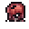

Chainsaw Man Mod Wiki
Pull the cord and become the Chainsaw Devil. This mod adds Pochita, three tiers of Chainsaw Man transformation, seven devil hybrid forms, a chainsaw weapon, seven new devils and five bosses, ending with Makima after the Moon Lord.
Getting started
Everything you need to start is craftable early, before any bosses:
| Item | What it's for | Recipe |
|---|---|---|
 Pochita's Heart Pochita's Heart | Accessory you must wear to transform. Melee hits heal you, and it saves you from death once every 5 minutes. | Life Crystal, 5 Chain, Shackle @ Demon/Crimson Altar |
 Starter Cord Starter Cord | Use it to turn into the Chainsaw Devil (tier 1). Use it again to turn back. | 10 Rope, 3 Iron/Lead Bar @ Anvil |
 Chainsaw Arm Chainsaw Arm | A held chainsaw that shreds enemies and trees, and hits much harder while you're transformed. | 12 Iron/Lead Bar, 10 Chain @ Anvil |
 Pochita Doll Pochita Doll | Summons Pochita as a flying pet. | 10 Silk, 2 Chain @ Loom |
Equip Pochita's Heart, then use the Starter Cord. The form has no time limit and no cooldown. While you're transformed, ability items appear in your empty inventory slots (hotbar first), so keep a few slots free.
Progression guide
-
Pre-boss: become the Chainsaw Devil
Craft Pochita's Heart, the Starter Cord and the Chainsaw Arm. Hunt Zombie Devil Minions at night for Devil Flesh, which you can also spend on any of the hybrid form items.
-
Pre-Hardmode boss: the Zombie Devil
Craft a Rotting Offering (8 Devil Flesh @ Demon/Crimson Altar) to fight the Zombie Devil. It can drop the Chainsaw Arm and Pochita's Heart.
-
Early Hardmode: the Bat Devil and the Eternity Devil
Beat the mechanical bosses for souls, then upgrade to the Revved Starter Cord (tier 2), which unlocks Chain Hook. The Bat Devil can also drop the Revved cord. Take on the Eternity Devil with a Cursed Hotel Key.
-
Post-Plantera: the Gun Devil
Collect Gun Devil Fragments from Gun Devil Spawn on the Hardmode surface, then craft a Gun Devil's Trigger to summon the Gun Devil.
-
Post-Moon Lord: Hero of Hell and Makima
Craft the Hero of Hell's Cord (tier 3) for the strongest form and Chainsaw Storm, then sign Makima's Contract to face Makima.
The Chainsaw Arm, every Chainsaw Devil ability and every hybrid form also grow stronger each time you beat Skeletron, the Wall of Flesh, any mechanical boss, Plantera and the Moon Lord.
Browse the wiki
Chainsaw Man
Pochita's Heart, the three cord tiers, abilities, the Chainsaw Arm and the form sprites.
 Hybrid forms
Hybrid forms
Reze, Katana Man, Quanxi, Barem Bridge, Miri Sugo, the Spear Hybrid and the Whip Hybrid.

Devils & bossesSeven devil enemies and five bosses: where they spawn, how they fight and what they drop.
 Items & recipes
Items & recipes
Every craftable item in one place, plus materials and summon items.
 Install
Install
How to build the mod in tModLoader, and a fix for the most common error.